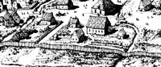

Albert Janse Ryckman
City father Albert Janse probably was born during the 1640s. He was the son of Beverwyck pioneers Jan Janse and Tryntje Jans. Perhaps he was their only child. Their descendants are known by the surname "Ryckman."
By the mid-1660s, Albert had married Cornelia Quackenbush - daughter of a Beverwyck brickmaker. These Ryckmans became prominent Albany householders with a large family of at least twelve children. Both parents were members of the Albany Dutch church and were active in church affairs.
Albert Janse was a brewer - perhaps the most prominent Albany brewmaster of the late seventeenth century. Among his clients were the fort and the Dutch church where Deacon Ryckman frequently supplied beer for funerals and other occasions. His house and brewery were located riverside stretching along the east side of today's Broadway. As the premier producer of one of the most highly sought early American commodities, Albert Ryckman became quite wealthy - with a property assessment comparable to that of the most successful fur traders. In 1690, he also was identified as a merchant and was dealing in materials for repairing canoes. He also acquired a number of house and garden lots close to the shoreline. Sometimes, he was referred to as "Captain" Ryckman. In 1697, his household included three additional men - probably three of his grown sons Johannes, Pieter, Albert, Jr., or Harmanus.
His overall wealth and status were reflected in an appointment to the first city council as alderman and assessor for the third ward in 1686. He would be reelected annually the council seat until he was appointed mayor of Albany in 1702. He served for a year - the only member of his family to achieve such high distinction. Approaching sixty, Albert Ryckman then retired from public life and seems to have been most involved in furthering the interests of his sons.
Albert Ryckman filed his will in 1736. Probably into his nineties, at that time he still thought of himself as an "Albany county brewer." Although Cornelia was still alive, she was not mentioned when he divided his estate among his living children. He died in January 1737 and was buried from the Albany Dutch church.
 The long life of Albert Janse Ryckman
is CAP biography number 1905. This profile is derived
chiefly from family and community-based resources. The most substantial
printed source on this family still may be "Albert Janse Ryckman and
his wife Neeltje Quackenbush and some of their descendants," compiled
by Mrs. Harry S. Fitz Randolph (Jackson Heights, 1956), typescript
copy in the local history holdings of the New
York State Library.
The long life of Albert Janse Ryckman
is CAP biography number 1905. This profile is derived
chiefly from family and community-based resources. The most substantial
printed source on this family still may be "Albert Janse Ryckman and
his wife Neeltje Quackenbush and some of their descendants," compiled
by Mrs. Harry S. Fitz Randolph (Jackson Heights, 1956), typescript
copy in the local history holdings of the New
York State Library.
Detail from the Albany overview depicting what the artist and cooperating historians believe was the location of the Ryckman brewery in 1686. Jonathan Pearson and other antiquarian writers have placed his home at the southwest corner of Broadway and Hudson streets. That would be wholly inconsistent with the community records which uniformly identified him as a resident of the third ward. In 1720, he still was identified as a resident of the third ward. Perhaps later in life he relocated to the Hudson Street corner - a place of residence for subsequent generations of Ryckmans.
In 1702, his third ward property was assessed at 80 pounds - placing his worth in the community's top five percent.